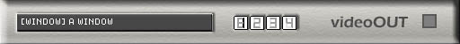

eleKtroniKa
help file
video out module
send
video stream to video device (window, overlay window, directX driver)

inputs/outputs
4 videos in
usage
list,
select the video out device
buttons (1/2/3/4), select the video in stream
-device list-
[window] a
simple window, can be resized and moved to the second video out (dual head)
[overlay window] can
be resized, overlay window have vsync (with matrox video card)
activate DVmax and this windows appear automaticly full screen on the second
video out.
[directX] select a second
video device, for full screen video out on the second head.
copyright aestesis
2003
www.aestesis.org